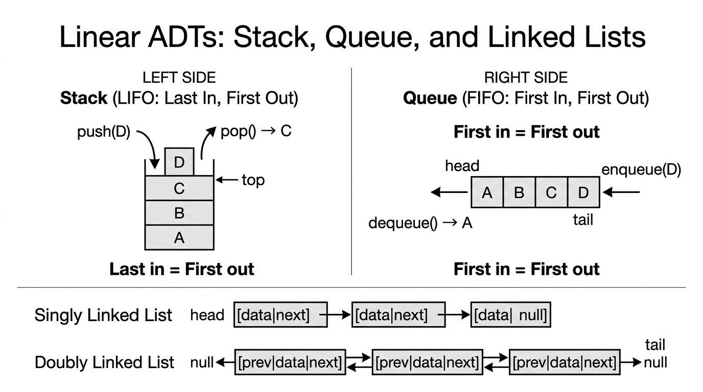

Abstract Data Types — COMP0005 Algorithms¶
Lecture-style notes. An abstract data type (ADT) describes what operations a collection supports and how they behave from the user’s perspective. A data structure is a concrete way to store data in memory so those operations can be implemented efficiently from the implementer’s perspective. Separating the two is central to modular software design and to reasoning about correctness vs performance.
1. COMPLETE TOPIC SUMMARIES¶
ADTs vs data structures — two viewpoints¶
| Abstract Data Type (ADT) | Data Structure | |
|---|---|---|
| Perspective | User / client of the API | Implementer / library author |
| Specifies | Behaviour: allowed operations and their meaning (pre/post conditions, invariants) | Representation: how values are laid out in memory (arrays, pointers, trees, hash tables, …) |
| Hides | Implementation details | Nothing — this is the implementation |
| Example | “A stack supports push, pop, isEmpty with LIFO semantics” |
“Implement the stack with a resizing array or a linked list” |
Why it matters: You can swap implementations (e.g. ArrayList vs LinkedList for a list-like ADT) without changing code that only uses the public operations — as long as the semantics stay the same.
Exam phrasing: An ADT is a contract; a data structure is one way to honour that contract.
ADT overview — linear collections¶
Linear ADTs organise elements in a sequence (there is a natural “first”, “next”, “last” story, even if access patterns differ).

{kind=link}
Array ADT (fixed size, indexable)¶
- Idea: A sequence of \(n\) slots, numbered \(0, 1, \ldots, n-1\), each holding one element.
- Typical operations:
get(i),set(i, x)— random access by index. - Constraint: Length is usually fixed at creation (unlike a dynamic list).
List ADT (dynamic, sequential)¶
- Idea: A variable-length ordered sequence; emphasis on structure at the ends and sequential traversal.
- Typical operations:
append(x),prepend(x),head(),tail()(exact names vary by course/textbook; some courses also requireinsert/removeat position). - Contrast with array ADT: Lists stress growth and sequential use; arrays stress index access.
Stack ADT (LIFO — last in, first out)¶
- Operations:
push(x)adds \(x\) on top;pop()removes and returns the most recently pushed element;isEmpty()tests whether any element remains. - Invariant: The element returned by
popis always the one most recentlypushed among those still stored.
Queue ADT (FIFO — first in, first out)¶
- Operations:
enqueue(x)adds \(x\) at the back;dequeue()removes and returns the element at the front (the oldest still waiting). - Invariant: Order of removal matches order of insertion among items still in the queue.
Priority queue ADT¶
- Operations:
enqueue(x, p)(or enqueue \(x\) with implicit priority) inserts an item;dequeue()removes an item with highest priority (or lowest, by convention — be consistent in an exam answer). - Contrast with queue: FIFO is replaced by priority order; two items enqueued at different times may leave in either order depending on priority.
ADT overview — non-linear collections¶
Non-linear ADTs are not modelled as a single left-to-right sequence with one obvious “next” for every element in the same way.
Set and multiset (bag)¶
- Set: Unordered collection of distinct elements.
- Multiset (bag): Unordered collection allowing duplicates (each value may appear more than once; “how many copies” is part of the state).
- Typical operations:
insert(x),remove(x),contains(x)(and for bags, oftencount(x)in richer APIs).
Map (dictionary / associative array)¶
- Idea: Stores (key → value) pairs; each key appears at most once.
- Typical operations:
insert(k, v),remove(k),update(k, v),lookup(k)(sometimesinsertandupdateare unified as “put”). - Use case: Fast retrieval of a value by key rather than by integer index.
Implementing ADTs — array data structure¶
An array (in the data-structure sense) is a contiguous block of memory holding homogeneous elements (same size per cell in the low-level picture).
Array ADT on a plain array¶
- Addressing: Cell \(i\) is found at \(\text{base} + i \times \text{sizeOfElement}\) (conceptually); hence
get(i)andset(i, x)are \(O(1)\) worst case for a fixed array.
Stack ADT on an array¶
- Keep a top index (or size counter).
pushwrites attop+1and increments;popreadstopand decrements. All \(O(1)\) worst case if space is already available.
Queue ADT on an array — circular buffer¶
- Naive dequeue (shift everything left) is \(O(n)\). Instead, keep head and tail indices and treat the array as circular (wrap with modulo or explicit wrap logic). Then enqueue and dequeue are \(O(1)\) worst case per operation (given capacity).
Resizing arrays (dynamic stack / list backing store)¶
When the array is full and you need another push:
- Allocate a new array of double the capacity (common choice).
- Copy all elements to the new array.
- Continue operations.
Amortised analysis (sketch): Doubling is expensive occasionally, but the copies are rare enough that averaged over many pushes, each push costs \(O(1)\) amortised.
Shrinking (common policy): When the array becomes only \(\frac{1}{4}\) full after a pop, halve the capacity (and copy). This keeps space \(\Theta(n)\) for \(n\) stored elements and preserves \(O(1)\) amortised for both push and pop under standard accounting.
Capacity invariant (typical): After each operation, the array is between \(25\%\) and \(100\%\) full (up to small constant slack right after resize), so you do not thrash between grow and shrink.
| Worst case (single op) | Amortised | |
|---|---|---|
| Push / pop with resize | \(O(n)\) when copy happens | \(O(1)\) |
Implementing ADTs — linked lists¶
A linked list is a dynamic chain of nodes. Each node stores payload data and link(s) to neighbour(s). Lists are good when you need frequent inserts/deletes in the middle given a pointer to the node — but random access by index is generally slow.
Singly linked list¶
Each node: data, next.
| Operation | Idea | Typical time |
|---|---|---|
Append (with tail pointer) |
tail.next = newNode, move tail |
\(O(1)\) |
| Prepend | newNode.next = head, head = newNode |
\(O(1)\) |
| Delete a known node | Need predecessor to patch next |
\(O(n)\) without predecessor pointer; \(O(1)\) if you already have predecessor |
| Access \(i\)-th element | Walk from head |
\(O(n)\) |
Doubly linked list¶
Each node: data, prev, next.
- Delete (with pointer to node): patch
prev.nextandnext.previn \(O(1)\). - Trade-off: Extra memory per node and slightly more pointer bookkeeping.
Stack via linked list¶
push: prepend (or append with tail) → \(O(1)\).pop: remove head (or tail if doubly linked / with tail) → \(O(1)\).
Queue via linked list¶
enqueue: insert at tail → \(O(1)\) with tail pointer.dequeue: remove from head → \(O(1)\).
Other implementations — maps and priority queues¶
These ADTs are specified abstractly, but their performance depends heavily on representation.
| ADT | Naïve / simple backing | Better backing | Typical time (informal) |
|---|---|---|---|
| Map | Unsorted array: scan keys | Hash table | Unsorted array: \(O(n)\) per lookup; hash table: \(O(1)\) average |
| Priority queue | Unsorted array: scan for max/min | Binary heap | Array: \(O(n)\) dequeue; heap: \(O(\log n)\) enqueue/dequeue |
Exam caution: \(O(1)\) for hash tables is almost always average-case under good hashing; worst-case collisions can degrade behaviour unless assumptions or fixes (e.g. balanced trees) are mentioned.
Implementation summary table (course-style)¶
| ADT | Common implementations | Java examples |
|---|---|---|
| Array | array | type[] |
| List | array, linked list | ArrayList, LinkedList |
| Queue | array, linked list | LinkedList |
| Stack | array, linked list | Stack, Deque implementations |
| Set & Bag | hash table | HashSet |
| Map | hash table | HashMap |
| Priority Queue | heap | PriorityQueue |
(Java class names are illustrative of common choices; your lecturer may prefer different interfaces.)
2. EXAM-STYLE QUESTIONS (WITH MODEL ANSWERS)¶
Q1 — ADT vs data structure¶
Question. Explain the difference between an abstract data type and a data structure. Give one example of the same ADT implemented with two different data structures.
Model answer. An ADT specifies what operations exist and their behaviour (the user’s view), without saying how they are implemented. A data structure is a concrete representation in memory (the implementer’s view). Example: the stack ADT (LIFO with push/pop) can be implemented with a fixed/resizing array (top index) or a linked list (insert/remove at one end). Both honour the same abstract contract; time/space trade-offs differ.
Q2 — Queue with array without shifting¶
Question. Why is a naïve array queue that shifts all elements left on dequeue inefficient? Describe the circular array idea and state the worst-case time per enqueue and dequeue when capacity is sufficient.
Model answer. Shifting \(n\) elements costs \(\Theta(n)\) per dequeue, so \(m\) operations can cost \(\Theta(mn)\). A circular buffer keeps head and tail indices; dequeue only advances head (with wrap-around), and enqueue writes at tail and advances tail. Each operation is \(O(1)\) worst case as long as no resize is needed. (If the array must grow, a separate analysis / amortised story applies.)
Q3 — Linked list complexities¶
Question. For a singly linked list with pointers to head and tail, give big-O for: (a) prepend, (b) append, (c) access the element at index \(i\), (d) delete a node when you only have a pointer to that node (not its predecessor).
Model answer. (a) \(O(1)\) — create node, point to old head, update head. (b) \(O(1)\) with tail — link old tail to new node, update tail. (c) \(O(n)\) — must walk \(i\) steps from head in the worst case. (d) \(O(n)\) in general — singly linked lists cannot unlink a node without the predecessor unless it is the head (special case); finding the predecessor requires a scan.
Q4 — Resizing stack — amortised vs worst case¶
Question. A stack is implemented with a dynamic array that doubles when full. Argue that push is \(O(1)\) amortised even though a single push can trigger \(\Theta(n)\) copying. Mention why shrinking is usually not done immediately when the array becomes half full.
Model answer. Most pushes copy nothing and cost \(\Theta(1)\). After a resize from capacity \(n\) to \(2n\), the expensive push pays for copying \(n\) elements. Charging that cost across the \(\Omega(n)\) cheap pushes since the previous resize yields \(O(1)\) amortised per push (standard aggregate or accounting argument). If we halved whenever the array became half full, alternating push/pop near the threshold could trigger \(\Theta(n)\) work every operation; hence shrink-on-quarter-full (or similar hysteresis) is used so amortised bounds stay \(O(1)\).
Q5 — Map and priority queue implementations¶
Question. Compare implementing a map ADT with an unsorted array vs a hash table, and a priority queue ADT with an unsorted array vs a heap. Use big-O for lookup / dequeue as appropriate.
Model answer. Map: With an unsorted array, lookup(k) may scan all keys → \(O(n)\) worst case. A hash table maps keys with a hash function to buckets; lookup is \(O(1)\) average under good hashing and load-factor control (worst case can degrade if many collisions). Priority queue: With an unsorted array, dequeue must find the extremal priority → \(O(n)\). With a heap, extract-min/max is \(O(\log n)\) (and insert typically \(O(\log n)\)).
3. MUST-KNOW KEY POINTS¶
- ADT = behavioural specification (operations + meaning); data structure = concrete realisation.
- Linear ADTs: array (indexed, fixed), list (dynamic sequence), stack (LIFO), queue (FIFO), priority queue (by priority).
- Non-linear ADTs: set vs bag (duplicates), map (unique keys → values).
- Arrays: contiguous, \(O(1)\) index access; circular buffer for \(O(1)\) queue ends; doubling + halving on quarter → \(O(1)\) amortised stack/list growth story; single op can still be \(O(n)\) worst case when copying.
- Linked lists: \(O(1)\) prepend/append with right pointers; \(O(n)\) \(i\)-th access; singly linked delete needs predecessor unless head.
- Map / PQ: simple array backing often \(O(n)\) for heavy ops; hash table / heap give the standard fast implementations (average vs log caveats).
4. HIGH-PRIORITY TOPICS¶
🔴 Must Know¶
- Definitions: ADT vs data structure; LIFO vs FIFO; set vs multiset
- Array addressing: \(\text{base} + i \times \text{size}\) → \(O(1)\)
get/set - Circular array queue: why it beats shifting; \(O(1)\) enqueue/dequeue (no resize)
- Resizing array: double on full; amortised \(O(1)\) push; \(O(n)\) worst-case single push
- Shrink hysteresis: quarter-full rule; avoids \(\Theta(n)\) per op thrashing
- Singly vs doubly linked list trade-offs for delete and predecessor
- Map: array \(O(n)\) lookup vs hash \(O(1)\) average
- Priority queue: array \(O(n)\) dequeue vs heap \(O(\log n)\)
🟡 Important¶
- List vs array ADT: dynamic/sequential vs fixed/indexed emphasis
- Priority queue semantics: not FIFO unless priorities tie in a specified way
- Java mapping table (recognise typical classes, not memorise every method name)
- Homogeneous contiguous memory vs heterogeneous linked nodes (conceptual; languages vary)
- Worst vs amortised vs average — which bound applies to which structure
🟢 Useful but Lower Priority¶
- Alternative list/map/PQ implementations (balanced BSTs, skip lists, etc.) as enrichment
- Detailed accounting method vs potential method for amortised analysis (if not examined)
- Thread-safety, iterator invalidation, and API design in real libraries
5. TOPIC INTERCONNECTIONS & BIGGER PICTURE¶
- ADTs modularise algorithms: e.g. graph algorithms often need a queue (BFS), stack (DFS), priority queue (Dijkstra / Prim).
- Analysis of algorithms attaches to implementations: the same ADT operation can be \(O(1)\) or \(O(n)\) depending on backing store — always ask “which representation?”
- Sorting connects to priority queues: heapsort is essentially PQ sort using a heap as the PQ implementation.
- Hashing (maps/sets) reuses ideas from universal / good hash functions and load factors; collision resolution ties to lists or open addressing (arrays again).
- Memory hierarchy: arrays are cache-friendly (contiguous access); linked lists can be pointer-chasing heavy — big-O is not the whole engineering story.
- Abstract specification + concrete implementation is the same design pattern behind interfaces and classes in OOP.
6. EXAM STRATEGY TIPS¶
- If a question names an ADT, list the operations and invariants first (e.g. LIFO), then discuss implementation — marks often go to correct behaviour before complexity.
- For complexity, state worst / amortised / average explicitly when relevant (especially hash tables and resizing arrays).
- Queue + array questions: mention circular indices and why shifting fails.
- Linked list questions: always check whether you have
tail, doubly linked links, or a pointer to predecessor — these change delete and append answers. - Compare two implementations using a small table (time for each core op, memory overhead, cache locality) — examiners like structured comparisons.
- When citing Java examples, treat them as illustrative; tie each back to the underlying data structure (array, doubly linked, hash table, heap).
These notes align with standard COMP0005 treatments of ADTs and basic implementations; follow your lecturer’s exact operation lists and complexity conventions if they differ.